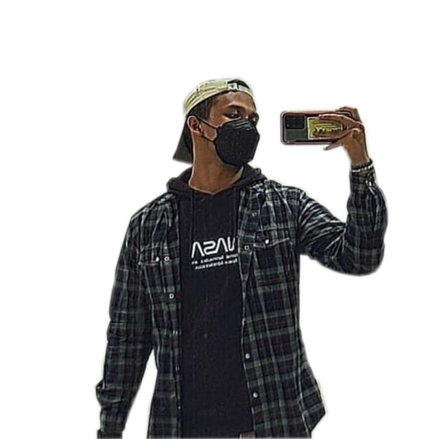

About Myself
Hello! My name is Asraf, and I'm from the Diploma of Chemical Engineering. I've loved creating things since I was in secondary school, from the first prototype to the finished product, which inspired me to choose this elective.
My hobbies are going to the gym, cycling and playing game.
For gym I usually do powerlifting.
My personal record for Bench Press: 87.5Kg; Squat: 120Kg; Deadlift: 160Kg: Total: 367.5Kg
Soon I will reach my goal to a total weight of 400Kg
Join me on this adventure as I investigate various applications and devices about which I may be utterly clueless. To view the various findings for each project, click on the navigation panel above.